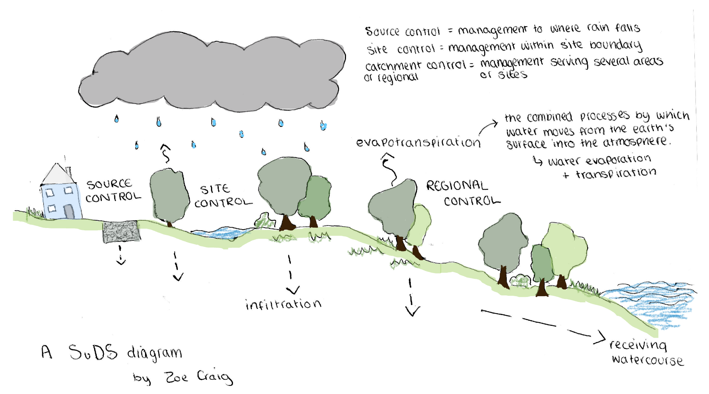

Water companies have been dumping sewage (treated or untreated) into our waters for decades, with regulators and the government frequently turning a blind eye to the damage. Their attitude stinks. Learn more about the water crisis and the campaign to stop it below.
In 2020, South West Water dumped a total of 383,696 hours worth of sewage into Devon and Cornwall, and 354,564 hours worth in 2021.
Data was provided by South West Water
|
In the UK, we are lucky to have a fully-functioning modern sewage system which means we often
do not give much thought about what happens to the sewage and wastewater produced each day. Due to
population growth, accelerated urbanisation and economic development – in addition to an increase in
rainwater, the demand for our systems has increased dramatically.
|
Data was provided by South West Water

|
A CSO at Hannafore beach in Looe, Cornwall. Taken by Zoe A CSO at Hannafore beach in Looe, Cornwall taken from another angle. Taken by Zoe |
|
|  |
Researchers point towards urban planning rather than replacing sewage infrastructure as the most effective and efficient solution to sewage overflows. Examples of these include rain gardens and permeable pavements, designed to manage the runoff in a sustainable way by replicating the drainage processes provided by the natural environment. It is mandatory in Wales for new developments to incorporate sustainable drainage systems (SuDS), but England has yet to follow. When it comes to existing developments there is no current legislation which makes it more of a challenge. To read more about the schemes and how they work, read our article on ‘Rethinking sewage management’.
|
A raingarden on Wood Street, Cardiff. Taken by Thanousha and Arian |